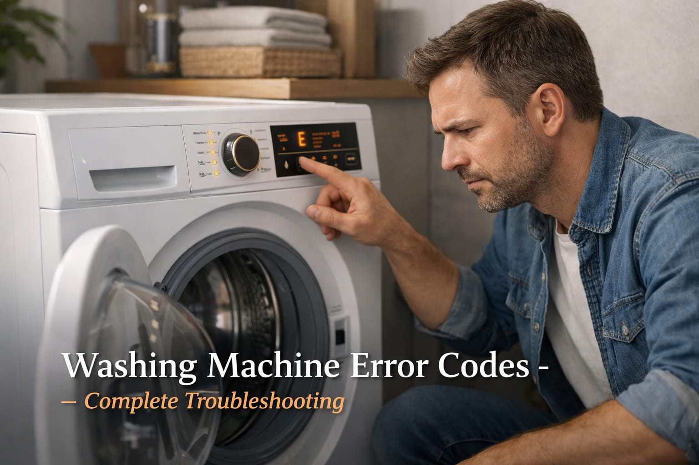

A family from Mehar called me in March 2003. They said "Our Haier washing machine is showing E1 error. The machine stops with water inside. The clothes are soaking wet." I asked them to check the drain pump filter. They opened the bottom panel and found a small sock stuck in the filter. They removed it. The water drained. The machine worked again. The mother said "You saved us from buying a new machine. Thank you so much."
Brand: Haier | Error: E1 | Fix: Remove sock from drain filter
Washing machine error codes are your appliance's way of telling you exactly what is wrong. From UE for unbalanced load to LE for door lock issues, each code points to a specific problem. This guide covers all major brands available in Pakistan including Haier, Dawlance, Samsung, LG, and more.
Quick Tip: Always note the exact error code and when it appears. This helps technicians diagnose faster. Take a photo before resetting the machine.
A shopkeeper from Gambat called me in July 2005. He said "My Samsung washing machine is showing UE error. The machine shakes violently during the spin cycle and then stops." I asked him to check the load. He had put too many heavy towels on one side. He redistributed the clothes evenly. The machine completed the cycle. He said "I was about to call an expensive technician. You saved me money."
Brand: Samsung | Error: UE | Fix: Redistribute unbalanced load
| Error Code | Meaning | Common Fix | Difficulty |
|---|---|---|---|
UE | Unbalanced load | Redistribute clothes evenly | Easy |
LE / LE1 | Door lock error | Check door, replace lock | Medium |
OE / OE1 | Drain error | Clean pump filter | Easy |
IE / 1E | Water inlet error | Check water supply, clean filters | Easy |
E1 | Drain problem (Haier) | Clean pump, check drain hose | Easy |
E2 | Door not closed | Close door properly | Easy |
A school teacher from Ranipur called me in October 2007. He said "My LG washing machine is showing LE error. The machine will not start. The door looks closed but the error stays." I asked him to check the door latch. He found that a small piece of plastic had broken off the latch. He ordered a replacement latch for 800 rupees. He installed it himself. The machine started working. He said "I fixed my own machine. I feel very proud."
Brand: LG | Error: LE | Fix: Replace broken door latch
E1 Drain error
E2 Door not closed
E3 Unbalanced load
E4 Water inlet
E1 Drain issue
E2 Door lock
E3 Unbalanced
E4 Water inlet
1E/IE Water supply
4E Water not filling
5E Drain issue
UE Unbalanced
IE Water inlet
OE Drain error
UE Unbalanced
LE Lock error
A businessman from Kashmore called me in January 2009. He said "My Dawlance washing machine is showing OE error. There is water in the drum but the machine will not drain. I have laundry to do for my family." I told him to clean the pump filter. He opened the cover and found a coin and lint blocking the filter. He cleaned it. The water drained. He said "Such a simple fix. Thank you for your help."
Brand: Dawlance | Error: OE | Fix: Clean pump filter, remove coin
Symptoms: The machine shakes violently, stops during the spin cycle, and clothes come out wet.
Solutions: Open the door and redistribute the clothes evenly. Mix large and small items together. Remove some items if the machine is overloaded. Check if the machine is level. Adjust the feet if needed. Ensure the machine is on a solid, level floor.
Symptoms: The machine will not start, beeps, and shows a lock symbol.
Solutions: Ensure the door is firmly closed. You should hear a click. Check if anything is blocking the door. Inspect the door latch for damage. Test the door lock with a multimeter for continuity. Replace the door lock assembly if it is faulty.
Symptoms: Water remains in the drum, the cycle stops, and the error is displayed.
Solutions: Turn off and unplug the machine. Open the pump filter cover at the front bottom. Drain the water using the drain hose. Remove and clean the filter. Remove any coins, buttons, or lint. Check the drain hose for kinks or blockages. If the pump is not working, it may need replacement.
Symptoms: No water enters the machine, the cycle stops, and the error shows.
Solutions: Check if the water taps are fully open. Check the water pressure. It should be adequate. Disconnect the inlet hoses and clean the filters. Check if the inlet valve is getting power. Replace the inlet valve if it is faulty.
A housewife from Rohri called me in May 2011. She said "My Haier washing machine is showing E4 error. The machine is not filling with water. The tap is on but nothing happens." I asked her to check the inlet hose filter. She disconnected the hose and found the filter was completely blocked with sand and dirt. She cleaned it with water. The machine started filling. She said "I never knew such a small filter could cause this problem. Thank you for teaching me."
Brand: Haier | Error: E4 | Fix: Clean blocked inlet hose filter
Safety Warning: Always unplug your washing machine before any internal inspection. Water and electricity are a dangerous combination. If you are not confident, call a professional technician. For motor or PCB issues, professional help is recommended.
Clean the pump filter to remove coins, buttons, and lint buildup. Wipe the door seal to prevent mold and bad odors. Leave the door open after each use to let the drum dry completely.
Clean the detergent drawer. Remove it and wash it with hot water. Run a cleaning cycle using a washing machine cleaner or white vinegar. Check the hoses for cracks or bulges.
Schedule professional service to check the bearings, motor, and electrical connections. Replace the inlet hoses every 3 to 5 years to prevent bursts. Check if the machine is still level.
Hard Water Tip for Pakistan: In areas with hard water, use more detergent and run descaling cycles every 3 months. This prevents mineral buildup in the heating elements and hoses. Add white vinegar to the cleaning cycle for better results.
Pakistan Specific Tips: In areas with low water pressure, the IE error is common. Ensure the tap is fully open and clean the inlet filters regularly. During load shedding, unplug the machine to protect the PCB from power surges. Use a voltage stabilizer for protection. In dusty areas, clean the machine's ventilation grilles regularly.